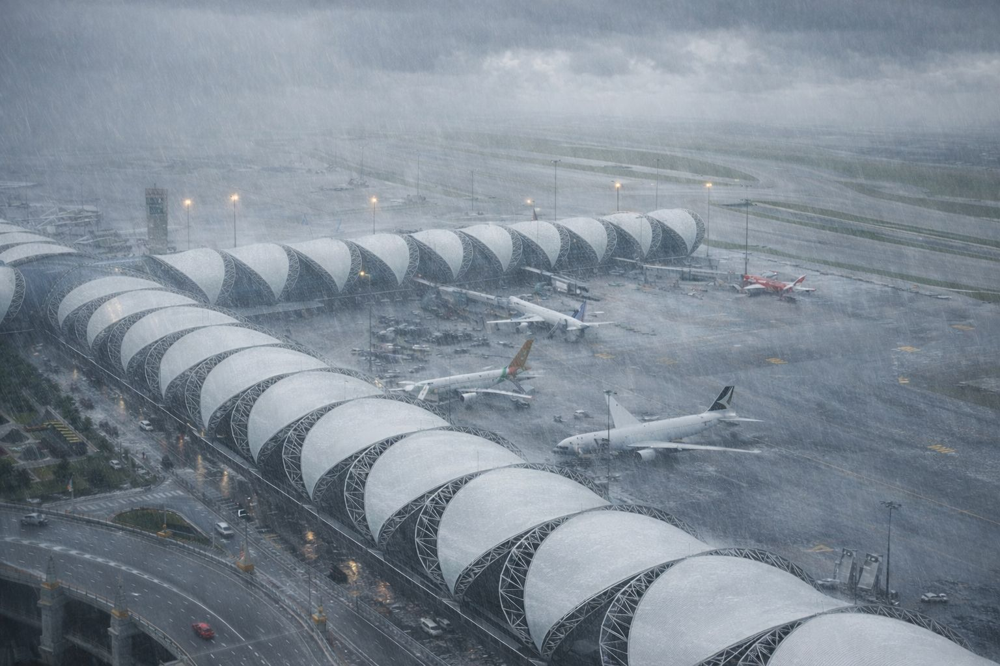

L'aeroporto internazionale della capitale thailandese è stato temporaneamente chiuso nella mattinata di martedì dopo un rapido peggioramento delle condizioni meteorologiche che ha interessato l'area metropolitana di Bangkok e diverse province centrali del Paese.
Le autorità aeroportuali hanno annunciato la sospensione di decolli e atterraggi a causa di forti piogge monsoniche, raffiche di vento e visibilità ridotta lungo le piste principali. Alcuni voli in arrivo sono stati deviati verso scali alternativi nella regione, mentre numerosi collegamenti in partenza sono stati rinviati.
Secondo i primi rapporti diffusi dai gestori dello scalo, le precipitazioni intense hanno provocato allagamenti in alcune aree operative e difficoltà nelle operazioni di rullaggio degli aeromobili.
Le compagnie aeree stanno informando i passeggeri sui ritardi e sulle eventuali modifiche agli itinerari. Ai viaggiatori è stato consigliato di verificare lo stato del proprio volo prima di recarsi in aeroporto.
Il servizio meteorologico nazionale prevede che il sistema temporalesco possa persistere per diverse ore, con ulteriori precipitazioni e possibili disagi anche nei trasporti urbani della capitale.